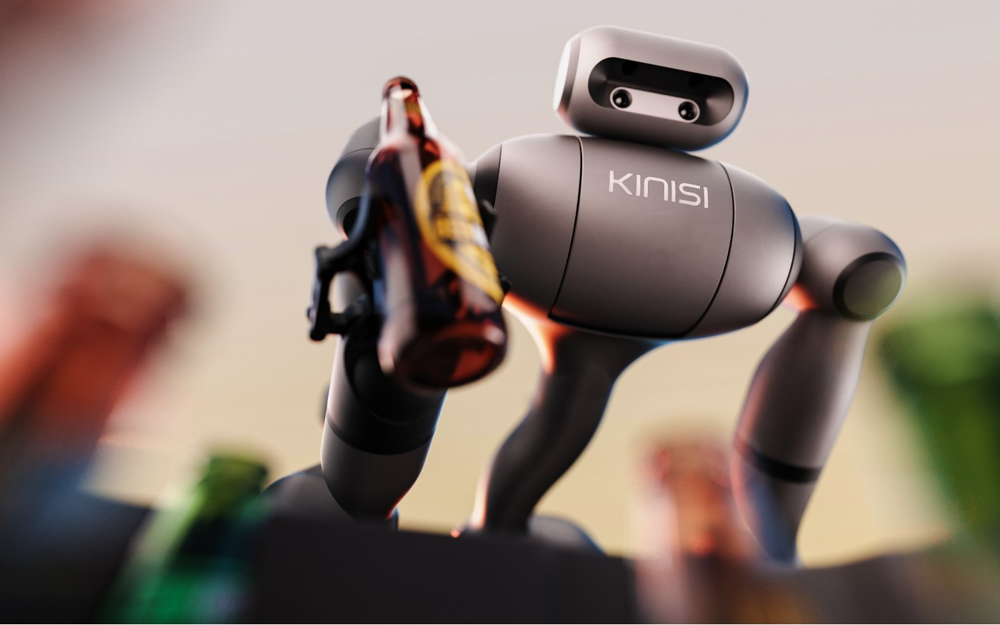

Bear Robotics KINO-2 · 产品 · 客户试点
KINO-2把抓取接入仓库任务，但推理加速不等于整单成功
2026-10-21T11:30:31Z · main
同一项目的完整分析。研究截止为14:00:02Z；来源核验与图片获取在后，不改变事件日期。

Bear Robotics的KINO-2宣传图；不证明客户现场可靠性。 ↗ 原始图证01 · 任务与证据
Bear Robotics于10月21日11:30:31 UTC发布KINO-2，十二秒后发表工程深读；技术文章记录的13:22:30 UTC修订也早于本期截止。实质变化是把学习式机械操作接入移动机器人运行流程。旧安排中，人负责拣选和装箱，移动机器人负责运输，工程师再为每个抓取任务单独编程或调参。KINO-2围绕KR1提出示范采集、模型学习、机器人执行与结果记录相连的开发循环。仓库和工业团队仍须让新增操作匹配订单系统、通道条件和异常处理，不能把机械臂完成一次动作等同于业务流程已经闭合。
02 · 采用条件与成本
厂商演示从仓库管理系统订单开始：抓取瓶子装入周转箱，送达目的地，再带空箱返回。客户概念验证涉及仓库装箱、超市退货与工业工作，但这些是试点，尚不能证明广泛商业部署。Bear约一万六千台机器人的装机基础主要来自服务机器人业务，不能归到KR1或KINO-2名下。已读原始资料未披露价格、公开软件下载或不受限的商业可用性。配图是厂商提供、具有视觉加工感的机器人展示图，不是独立拍摄的客户现场运行证明。
03 · 控制与恢复
控制循环比“物理AI”这个名称更具体。遥操作与受监督示范同步记录摄像头、机器人状态和人的动作；任务条件输入指定目标物体或动作。文中内部模型以10Hz预测四十步，相当于四秒动作范围，但只执行首个0.1秒步骤，随即基于新观察重新规划。这样限制了系统沿过时预测继续运行的距离，却不消除感知错误，也不等于接触安全已经验证。图示中的分割掩码条件输入仍是计划功能。Cosmos可改变示范视频的视觉风格，同时保留时间与动作标签，但Bear没有量化这种增强带来的性能收益。
04 · 实现与边界
若干数字属于不同实验层，必须分开阅读。一个仿真实例并行运行1024个KR1，在单次训练中把拣取时间从7.4秒降至3.7秒，输入包含仿真器提供的状态；它不是物理仓库中基于摄像头的吞吐量测量。运行侧使用Isaac OS、Holoscan 5.0、TensorRT与Jetson AGX Thor，内部模型相对PyTorch eager执行的报告时间由72.3毫秒降至17.2毫秒。GR00T 1.7的工程结果是每个动作块GPU执行时间中位数56.6毫秒，对照为较早四引擎构建的92.2毫秒。两者都不是摄像头输入到完成整张订单的端到端时延。
05 · 控制与恢复
发布稿中约500至60毫秒的比较，基线是最初未优化部署，不同于工程深读的92.2毫秒基线。执行修改后的命令jerk由237降至33米每三次方秒，说明的是命令平滑度，不是受伤风险或物品损坏结果。恢复仍是工程循环：检查干预与结果日志，针对失败补采示范、重训或修改执行，再重新评估。原始资料没有说明完整操作员急停界面、安全重试策略、最大重试次数或客户任务成功率。这些缺口直接影响卡住或识别错误的物体会怎样打断周围仓库流程。
06 · 控制与恢复
同任务替代包括人工拣选加现有移动运输、配夹具的固定机械臂工作站，以及其他移动操作机器人。KINO-2只有在示范减少换任务工程工作、集成运行时又能适应真实客户变化时，才具备更强采用理由。试点应记录正确完成的订单、抓错或掉落物品、每百单干预次数、恢复时间，以及适配陌生SKU所需工程投入；还应区分收益来自模型变快、任务被限制，还是示范数据变好。若推理延迟下降，异常仍频繁需要专家处理，技术虽有进步，运营回报仍没有得到证明。
← 回到项目，继续翻页